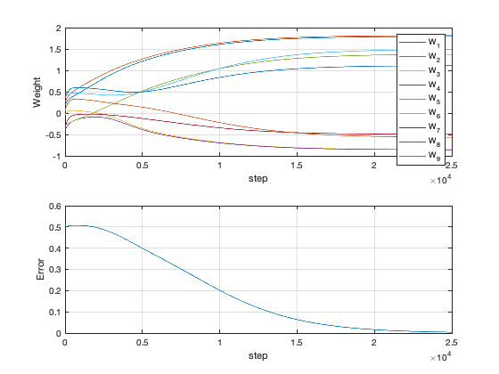

Demonstrate training and back propagation of the XOR problem
Contents
See also
XOR, XORTraining
% Training data - also the truth data a = [0 1 0 1]; b = [0 0 1 1]; c = [0 1 1 0]; % First try implementing random weights w0 = [ 0.1892; 0.2482; -0.0495; -0.4162; -0.2710;... 0.4133; -0.3476; 0.3258; 0.0383]; cR = XOR(a,b,w0); fprintf('\nRandom Weights\n') fprintf(' a b c\n'); for k = 1:4 fprintf('%5.0f %5.0f %5.2f\n',a(k),b(k),cR(k)); end % Now execute the training w = XORTraining(a,b,c,w0,25000,0.001); cT = XOR(a,b,w); fprintf('\nWeights and Biases\n') fprintf(' Initial Final\n') for k = 1:9 fprintf('%d %7.4f %7.4f\n',k,w0(k),w(k)); end fprintf('\nTrained\n') fprintf(' a b c\n'); for k = 1:4 fprintf('%5.0f %5.0f %5.2f\n',a(k),b(k),cT(k)); end
Random Weights
a b c
0 0 0.26
1 0 0.19
0 1 0.03
1 1 -0.04
Weights and Biases
Initial Final
1 0.1892 1.7933
2 0.2482 1.8155
3 -0.0495 -0.8535
4 -0.4162 -0.8591
5 -0.2710 1.3744
6 0.4133 1.4893
7 -0.3476 -0.4974
8 0.3258 1.1124
9 0.0383 -0.5634
Trained
a b c
0 0 0.00
1 0 1.00
0 1 1.00
1 1 0.01
 Copyright
Copyright (c) 2019 Princeton Satellite Systems, Inc. All rights reserved.